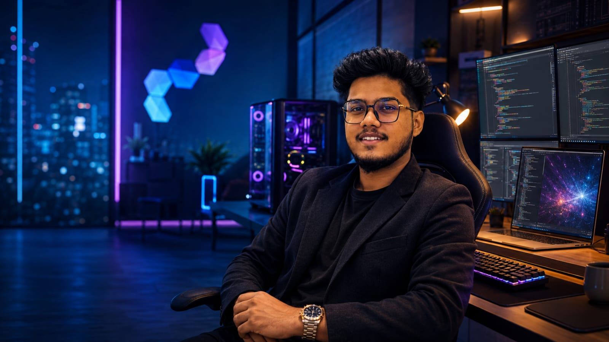

Growth Story
Education
Python Essentials
Graphic Design Experience
Learning, building, presenting, improving.
BIT undergraduate learning programming, software engineering, web/mobile development, databases, QA, project management, and multimedia.
University of Moratuwa TDC training foundation covering Python basics, OOP, file handling, modules, and Python-MySQL access.
Early practical design experience that supports layout, visual hierarchy, and polished presentation ability.